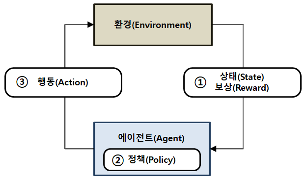
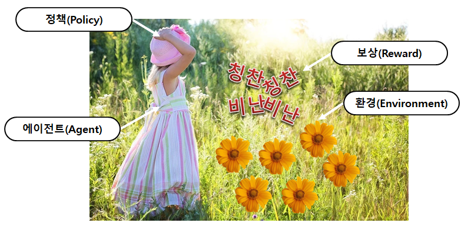
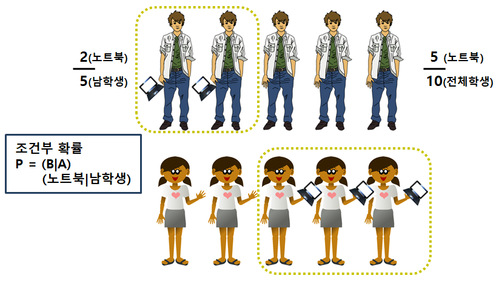
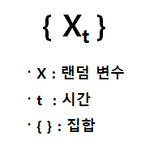
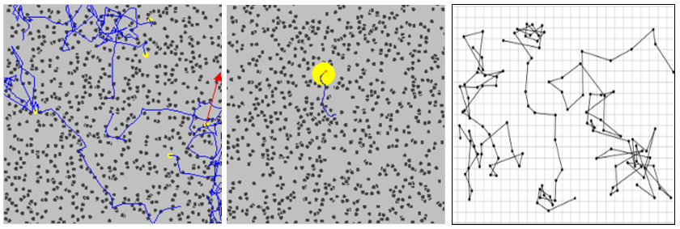

[강화학습 기초 2-1] 강화학습이란, 그리고 꼭 알아야 할 확률
강화학습의 구성 요소와, 강화학습을 이해하는 데 필요한 확률 · 조건부 확률 · 확률과정을 정리합니다.
강화학습 기초 시리즈 · 12편 중 2번째 글
연재 목차 보기
대표가 쓴 『개발자답게 코드로 익히는 강화학습』(프리렉, 2025)의 내용을 블로그에 맞게 정리해 연재합니다.
강화학습이란
강화학습은 보상을 잘 설계해서, 에이전트가 좋은 행동을 하도록 이끄는 정책을 찾는 방법입니다. 본격적으로 알고리즘을 다루기 전에, 이 장에서는 강화학습을 이해하는 데 필요한 배경지식을 차근차근 정리합니다. 강화학습은 인공지능 분야에서도 어려운 편에 속해서, 기초를 먼저 다져 두는 것이 결국 빠른 길입니다.
강화학습에서 에이전트(Agent)는 정책(Policy)에 따라 어떤 환경(Environment)에서 행동(Action)을 합니다. 행동에 따라 환경의 상태(State)가 바뀌고, 상태가 좋아졌는지 나빠졌는지에 따라 보상(Reward)을 받습니다.

정책이 좋으면 환경은 계속 좋은 쪽으로 바뀌고, 받는 보상도 커집니다. 강화학습의 목적은 행동의 결과로 받는 보상을 모두 더한 값, 즉 누적 보상이 가장 커지는 정책을 찾는 것입니다.

발밑은 보지 못하고 앞만 볼 수 있는 아이가 꽃이 심어진 화단을 건너간다고 생각해 봅시다. 아이가 한 발 내디딜 때마다 꽃을 밟으면 꾸중을 하고, 밟지 않으면 칭찬을 합니다. 이런 시도를 수없이 반복하면, 아이는 결국 꽃을 하나도 밟지 않고 화단을 건널 수 있게 됩니다. 칭찬받았던 경험이 쌓여서 어디로 가야 꽃을 밟지 않는지 알게 되기 때문입니다.
이 예에 강화학습의 용어를 붙여 보면 다음과 같습니다.
| 강화학습 용어 | 화단 예시 |
|---|---|
| 환경 | 화단 |
| 상태 | 화단에 있는 꽃들의 모습 |
| 에이전트 | 아이 |
| 행동 | 발을 내딛는 것 |
| 보상 | 칭찬과 꾸중 |
사실 우리는 자라면서 모르는 사이에 강화학습으로 많은 것을 배웁니다. 걸음마, 말, 자전거 타기를 배울 때 실패와 성공, 칭찬과 꾸중, 아픔과 성취감이라는 보상을 거치며 자연스럽게 몸에 익힙니다.
행동과 상태의 종류가 적으면 직접 계산해서 가장 좋은 정책을 찾을 수 있습니다. 하지만 종류가 많아지면 계산만으로는 찾기 어렵습니다. 이럴 때 쓰는 것이 인공신경망입니다.
지금은 조금 추상적으로 느껴질 수 있습니다. 앞으로 필요한 개념을 하나씩 살펴보면 어렵지 않게 내 것으로 만들 수 있습니다.
확률
강화학습을 이해하려면 먼저 확률을 알아야 합니다. 확률은 어떤 일이 일어날 가능성을 나타내는 방법이고, 같은 원인에서 특정한 결과가 나타나는 비율을 뜻하기도 합니다.
확률 하면 주사위가 먼저 떠오릅니다. 주사위를 던져 1이 나올 확률은 1/6입니다. 그렇다면 주사위를 6번 던지면 1이 반드시 한 번 나올까요? 그렇지 않습니다. 확률이 1/6이라는 말은 아주 많이 던져서 평균을 내면 6번에 한 번꼴로 1이 나온다는 뜻입니다.
이처럼 확률은 무작위(Random)라는 개념과 섞여 있습니다. 어떤 현상이 확률적(Stochastic)이라고 하면 무작위적이라고 생각해도 좋습니다. 그래도 주사위처럼 나올 수 있는 경우의 수를 알면 확률을 계산할 수 있습니다.
조건부 확률
조건부 확률은 어떤 조건 아래에서 일이 일어날 확률입니다. A가 일어났을 때 B가 일어날 확률을 P(B|A)라고 쓰고, A에 대한 B의 조건부 확률이라고 부릅니다.

남학생 5명, 여학생 5명인 반이 있고, 남학생 중 2명, 여학생 중 3명이 노트북을 가지고 있다고 해 봅시다.
- 반 전체에서 한 명을 골랐을 때 노트북이 있을 확률: 5/10 = 1/2
- 남학생 중에서 골랐을 때 노트북이 있을 확률: 2/5 → P(노트북 | 남학생)
- 여학생 중에서 골랐을 때 노트북이 있을 확률: 3/5 → P(노트북 | 여학생)
"남학생이라는 조건 아래에서" 확률을 따지는 것, 이것이 조건부 확률입니다.
확률과정
확률과정(Stochastic Process)은 확률(Stochastic)과 과정(Process)을 합친 말입니다. 확률은 짧게 보면 무작위지만 길게 보면 일정한 규칙이 있습니다. 과정은 성장 과정, 진화 과정처럼 시간과 연결되어 있습니다. 그래서 확률과정은 시간의 흐름에 따라 확률적으로 움직이는 상태를 말합니다.

확률과정은 보통 {Xt}처럼 씁니다. X는 랜덤변수, t는 시간, { }는 집합입니다. 즉 시간에 따라 나타나는 랜덤변수의 모음으로 확률과정을 표현합니다.
이런 개념을 만든 이유는 문제를 풀기 위해서입니다. 현상을 수학으로 표현할 수 있으면 프로그래밍으로 문제를 풀기 쉬워집니다. 확률과정은 시간에 따라 무작위로 바뀌는 상태나 환경을 수학으로 표현한 것이라고 정리할 수 있습니다.

확률과정이 쓰인 대표적인 예가 브라운 운동(Brownian motion)입니다. 1827년 스코틀랜드 식물학자 로버트 브라운이 물 위의 꽃가루 입자가 불규칙하게 움직이는 현상을 관찰했습니다. 처음에는 살아 있는 것이 스스로 움직인다고 생각했지만, 돌가루나 유리 같은 무기물에서도 같은 움직임이 나타났습니다.
한 지점에서 출발한 입자가 일정한 시간 간격으로 제멋대로 움직일 때, 충분히 여러 번 움직인 뒤 입자가 어디에 있을지 확률로 구할 수 있습니다. 이후 아인슈타인이 이 움직임의 원인이 물 분자의 충돌이라는 것을 밝히고 수식으로 정리했습니다. 브라운 운동은 지금도 통계역학과 경제학, 특히 시장의 움직임을 설명하는 데 많이 쓰입니다.
정리
- 강화학습은 누적 보상이 가장 커지는 정책을 찾는 방법입니다.
- 에이전트, 정책, 환경, 행동, 상태, 보상이 기본 구성 요소입니다.
- 조건부 확률은 "어떤 조건 아래에서"의 확률이고, 확률과정은 시간에 따라 확률적으로 바뀌는 상태입니다.
다음 편에서는 이 확률과정의 특별한 형태인 마르코프 연쇄를 살펴봅니다.